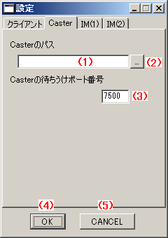

東方萃夢想 Alt Lobby System (仮) 東方萃夢想ロビーシステム(b10) 操作説明 設定ウィンドウ Caster設定
はじめに
このドキュメントは、東方萃夢想 Alt Lobby Systemのテスト版の操作説明を簡略にまとめたものです。
アプリケーションと同様に本ドキュメントもテスト版であり、機能の説明やスクリーンショットなどは予告なく変更されることがあります。
設定ウィンドウ Caster設定

操作説明
- (1)Casterのパス
- Casterのパスをフルパスで指定します。(2)の[...]ボタンを押すとファイル選択ダイアログが開きます。
- th075Caster.exeまたはCowCaster.exeが選択可能です。
- (3)Casterの待ちうけポート番号
- Casterの待ちうけポート番号を半角数値で入力します。(デフォルト値は7500)
- 対戦時には、ここで指定したポートに接続されます。ファイアウォール内の場合、ポートを開放する必要があります。
- (3)募集文
- 全ユーザーに公開される募集文です。(空にすることはできません、スペースは可能)
- 1行募集文と異なり、こちらの募集文はテーブルには表示されず、選択したときにのみ表示されます。
- (4)OK
- 設定を保存して、設定ウィンドウを閉じます。
- (5)CANCEL
- 設定を保存せず、設定ウィンドウを閉じます。
Caster側に必要な設定
東方萃夢想 Alt Lobby System (仮) は内部的にCasterを呼び出し操作するため、Caster側に少しの設定が必要になります。
Caster,CowCaster,RollCaster共通
[PORT]
onoff = 1
myPort = 7500
enPort = 7500
起動時などのポート番号入力を省略するかどうかのフラグです。0にすると、毎回入力待ちになります。入力待ちになっているかのチェックを行っていないため、テスト版では1にしてください。
myPort,enPortはそれぞれ自分と相手のPortです。myPortには(2)と同じ待ちうけポート番号を入力してください。
リンク
- 接続ウィンドウ
- http://th075altlobby.dip.jp/usage/connect_win.html
- メインウィンドウ
- http://th075altlobby.dip.jp/usage/main_win.html
- 設定ウィンドウ クライアント設定
- http://th075altlobby.dip.jp/usage/setting_win_client.html
- 設定ウィンドウ Caster設定
- http://th075altlobby.dip.jp/usage/setting_win_caster.html
- 設定ウィンドウ IM(1)設定
- http://th075altlobby.dip.jp/usage/setting_win_im1.html
- 設定ウィンドウ IM(2)設定
- http://th075altlobby.dip.jp/usage/setting_win_im2.html
- 東方萃夢想 Alt Lobby System (仮) 東方萃夢想ロビーシステム(b10) 操作説明
- http://th075altlobby.dip.jp/usage/
最終更新 : 2010-02-19 1:00
作成日時 : 2010-02-19 1:00
サイトトップ : http://th075altlobby.dip.jp/